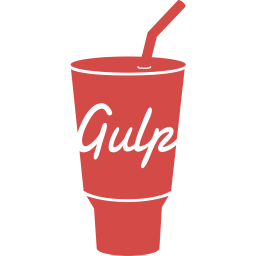

o mnie

Mam na imię Cezary. Jestem samoukiem. Pewnie jeszcze spora droga przede mną, jednak nie brak mi entuzjazmu w nauce, dlatego też cały czas podnoszę poziom swojej wiedzy webmasterskiej. Przygodę z branżą IT zacząłem od nauki języka C++, by po kilku miesiącach sprobować sił w tworzeniu stron internetowych. Z większych projektów mam za sobą pracę w teamie nad portalem o piwach kraftowych, gdzie ćwiczyłem umiejętność pracy w grupie w oparciu o metodykę scrumową. Przy tworzeniu stron internetowych dąrzę do czystości kodu oraz staram się implementować własne rozwiąnia. W życiu cenię sobie doznania estetyczne i tego też szukam w świecie webmasterskim. Uważam, że dobrze zaprojektowana strona internetowa może, a nawet powinna odnajdywać złoty środek pomiędzy treścią a formą - zadziwiając, rozśmieszając czy bawiąc. Przede wszystkim zaś dobra strona internetowa powinna być przejrzysta i intuicyjna, sprawiając przyjemność podczas przeglądania.
moje zainteresowania

muzyka

rozwój osobisty

aktywny
wypoczynek
podróże

salsa
wiedza


- 